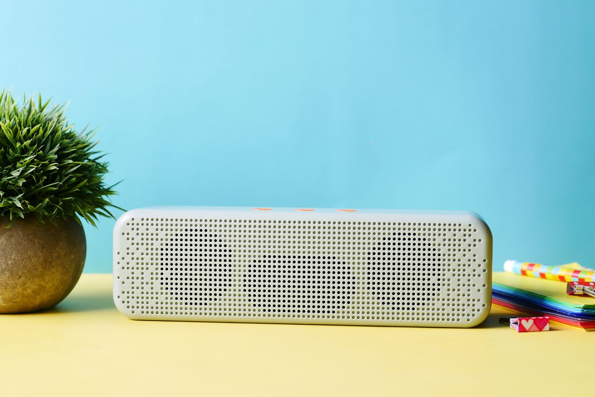
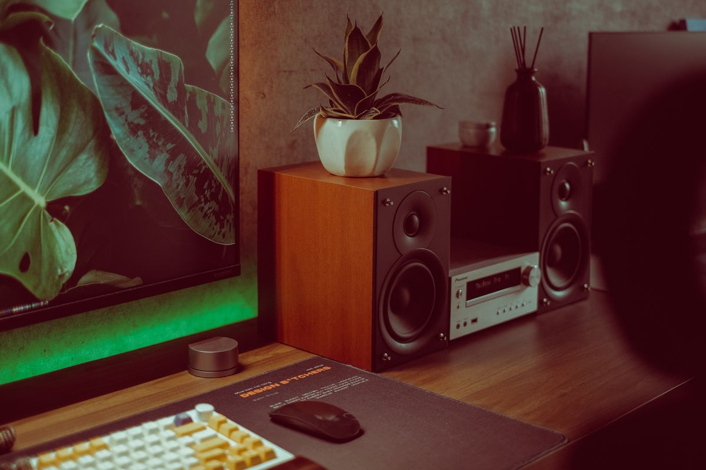
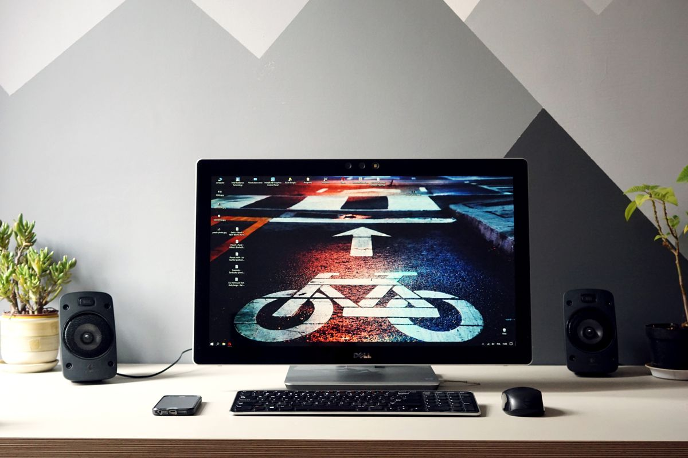
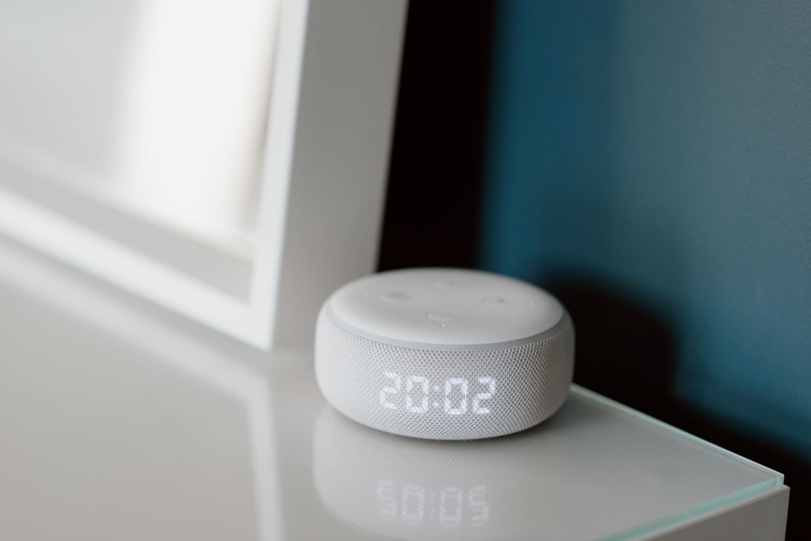

ลำโพงบลูทูธตั้งโต๊ะทำงาน 2026: เลือกให้เสียงดี ประหยัดพื้นที่ ทำงานเพลินทั้งวัน
ลำโพงบลูทูธตั้งโต๊ะช่วยยกระดับการทำงานและใช้ประชุมแฮนด์ฟรีได้ในบางรุ่น รวม 5 ประเภทที่แนะนำ พร้อมเกณฑ์การเลือกซื้อและเคล็ดลับจัดวาง ซื้อผ่าน Shopee
อัปเดต กรกฎาคม 2026
เสียงเพลงคลอเบา ๆ หรือพอดแคสต์ระหว่างทำงานช่วยให้หลายคนจดจ่อและอารมณ์ดีขึ้นได้จริง แต่การฟังจากลำโพงในตัวโน้ตบุ๊กมักได้เสียงบางและแบนจนไม่น่าฟัง การมีลำโพงบลูทูธตั้งโต๊ะสักตัวจึงยกระดับประสบการณ์การทำงานได้ทันที ทั้งยังใช้รับสายประชุมแบบแฮนด์ฟรีในบางรุ่นได้อีกด้วย บทความนี้จะช่วยให้คุณเลือกลำโพงที่เหมาะกับโต๊ะทำงาน โดยเน้นเรื่องขนาด คุณภาพเสียง และการเชื่อมต่อที่ใช้งานจริงในบริบทออฟฟิศและ work from home
ลำโพงบลูทูธช่วยเรื่องการทำงานได้อย่างไร
นอกจากความบันเทิง ลำโพงตั้งโต๊ะยังมีประโยชน์เชิงฟังก์ชัน หลายคนใช้เสียงเพลงแนว lo-fi หรือ ambient เพื่อกลบเสียงรบกวนรอบข้างและสร้างโซนสมาธิของตัวเอง บางรุ่นมีไมโครโฟนในตัวทำให้ประชุมออนไลน์ได้โดยไม่ต้องใส่หูฟังทั้งวันซึ่งช่วยลดอาการอึดอัดในหู และเมื่อจบวันทำงานลำโพงตัวเดิมก็กลายเป็นเครื่องเสียงสำหรับพักผ่อนได้เลย จึงเป็นอุปกรณ์ที่คุ้มค่าเมื่อเทียบกับพื้นที่ที่มันใช้บนโต๊ะ
ลำโพงบลูทูธตั้งโต๊ะที่แนะนำ

1. ลำโพงพกพาขนาดเล็ก (Compact Portable)
เหมาะกับโต๊ะพื้นที่จำกัดหรือคนที่ย้ายที่ทำงานบ่อย ลำโพงกลุ่มนี้ขนาดเท่ากำปั้นแต่ให้เสียงอิ่มพอฟังเพลิน แบตในตัวใช้ได้หลายชั่วโมงและพกไปใช้นอกโต๊ะได้ ข้อดีคือราคาเข้าถึงง่ายและวางตรงไหนก็ได้ ลำโพงบลูทูธพกพาขนาดกะทัดรัด

2. ลำโพงสเตอริโอคู่สำหรับตั้งโต๊ะ (Desktop Stereo Pair)
ถ้าจริงจังเรื่องเสียง ลำโพงแบบแยกซ้าย-ขวาวางขนาบจอให้มิติเสียงกว้างและแยกเครื่องดนตรีได้ชัดเจนกว่าลำโพงตัวเดียวมาก เหมาะกับคนทำงานสายครีเอทีฟที่ต้องฟังรายละเอียดเสียง หรือคนที่อยากได้ประสบการณ์ฟังเพลงคุณภาพระหว่างวัน ชุดลำโพงตั้งโต๊ะสเตอริโอ 2.0

3. ลำโพงทรงคอลัมน์ดีไซน์มินิมอล (Minimalist Column)
ลำโพงทรงสูงเพรียวเปลืองพื้นที่โต๊ะน้อยเพราะกินแนวตั้ง วางมุมโต๊ะได้พอดีและดูเข้ากับโต๊ะสไตล์เรียบหรู เหมาะกับคนที่ให้ความสำคัญกับความสวยงามของมุมทำงานควบคู่ไปกับเสียงที่ใช้ได้ ลำโพงบลูทูธทรงคอลัมน์ดีไซน์เรียบ
4. ลำโพงพร้อมไมโครโฟนสำหรับประชุม (Speakerphone)
สำหรับคนที่ประชุมออนไลน์บ่อย ลำโพงกลุ่มนี้ออกแบบมาเพื่อการสนทนาโดยเฉพาะ มีไมค์รอบทิศทางและระบบตัดเสียงสะท้อน ทำให้อีกฝ่ายได้ยินเสียงคุณชัดโดยไม่ต้องใส่หูฟัง เชื่อมต่อผ่านบลูทูธหรือ USB ก็ได้ เหมาะวางกลางโต๊ะเป็นศูนย์กลางการประชุม ลำโพงประชุมพร้อมไมโครโฟนในตัว

5. ลำโพงอัจฉริยะมีผู้ช่วยเสียง (Smart Speaker)
ถ้าอยากได้ทั้งเสียงเพลงและผู้ช่วยสั่งงานด้วยเสียงสำหรับตั้งเวลา เตือนนัด หรือเช็กสภาพอากาศระหว่างทำงาน ลำโพงอัจฉริยะตอบโจทย์ ใช้สั่งเปิดเพลงหรือควบคุมอุปกรณ์สมาร์ตโฮมอื่น ๆ บนโต๊ะได้แบบแฮนด์ฟรี ลำโพงอัจฉริยะพร้อมผู้ช่วยเสียง
เกณฑ์การเลือกลำโพงบลูทูธตั้งโต๊ะ
ขนาดเทียบพื้นที่โต๊ะ เป็นเรื่องแรกที่ต้องคิด โต๊ะเล็กควรเลือกลำโพงตัวเดียวขนาดกะทัดรัดหรือทรงคอลัมน์ ส่วนโต๊ะกว้างที่มีพื้นที่ขนาบจอค่อยพิจารณาชุดสเตอริโอคู่
คุณภาพเสียงและกำลังขับ ให้ดูว่าใช้ฟังแนวไหนเป็นหลัก ถ้าเน้นพอดแคสต์กับเพลงเบา ๆ ลำโพงเล็กก็พอ แต่ถ้าชอบเบสหนักหรือฟังรายละเอียด ควรมองรุ่นที่มีไดรเวอร์แยกและกำลังขับสูงขึ้น
การเชื่อมต่อ บลูทูธเวอร์ชันใหม่เชื่อมต่อเสถียรและประหยัดพลังงานกว่า หากใช้กับคอมพิวเตอร์เป็นหลัก มองหารุ่นที่มีพอร์ต USB หรือ AUX สำรองด้วยจะยืดหยุ่นกว่า และถ้าจะใช้ประชุมควรเลือกรุ่นที่มีไมโครโฟนในตัวโดยเฉพาะ
แหล่งพลังงาน ลำโพงเสียบปลั๊กให้เสียงต่อเนื่องไม่ต้องกังวลแบต เหมาะกับตำแหน่งประจำบนโต๊ะ ส่วนลำโพงมีแบตในตัวเหมาะกับคนที่ย้ายที่บ่อย แต่ต้องคอยชาร์จ
ดีไซน์และวัสดุ เลือกให้เข้ากับธีมโต๊ะ ผ้าหุ้มสีเทาหรือไม้ให้ความรู้สึกอบอุ่น ส่วนตัวเครื่องโลหะหรือพลาสติกด้านดูทันสมัย นอกจากความสวยแล้ววัสดุยังส่งผลต่อความทนทานในการใช้ทุกวัน
เคล็ดลับการจัดวางให้เสียงดีที่สุด
ตำแหน่งวางมีผลต่อเสียงมากกว่าที่คิด วางลำโพงให้สูงระดับใกล้หูขณะนั่งจะได้เสียงตรงกว่าการวางราบต่ำ หากเป็นชุดสเตอริโอให้วางซ้าย-ขวาห่างเท่ากันและหันเข้าหาตำแหน่งนั่งเล็กน้อยเพื่อให้จุดรวมเสียงอยู่ตรงหน้าคุณ หลีกเลี่ยงการวางชิดผนังหรือมุมมากเกินไปเพราะจะทำให้เบสบวมและเสียงขุ่น และควรจัดสายไฟให้เรียบร้อยด้วยที่รัดสายเพื่อไม่ให้รกโต๊ะ
สรุป
ลำโพงบลูทูธตั้งโต๊ะเป็นอุปกรณ์ที่ยกระดับทั้งอารมณ์และประสิทธิภาพการทำงานในราคาที่จับต้องได้ คนพื้นที่จำกัดเริ่มจากลำโพงพกพาหรือทรงคอลัมน์ คนรักเสียงเลือกชุดสเตอริโอคู่ ส่วนคนที่ประชุมบ่อยควรลงทุนกับลำโพงพร้อมไมค์โดยเฉพาะ พิจารณาขนาด คุณภาพเสียง และการเชื่อมต่อให้ตรงกับการใช้งานจริง แล้วโต๊ะทำงานของคุณจะมีเสียงประกอบที่ทำให้ชั่วโมงงานยาว ๆ ผ่านไปอย่างเพลิดเพลินขึ้นมาก
บทความนี้มีลิงก์ affiliate เมื่อคุณซื้อผ่านลิงก์ เราอาจได้รับค่าคอมมิชชั่นโดยที่คุณไม่ต้องจ่ายเพิ่ม